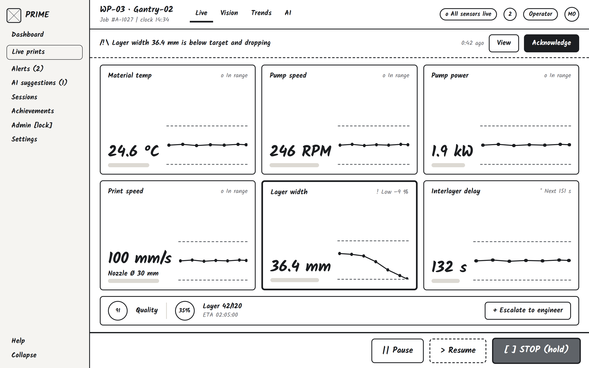
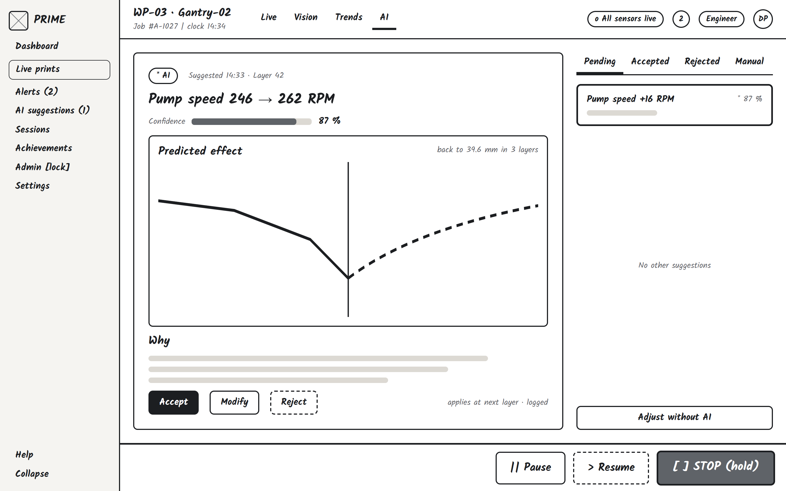
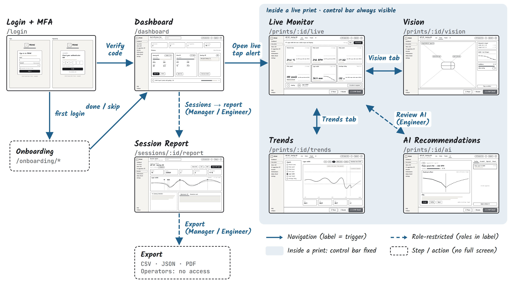

1. Login + MFA /login → /login/verify
Logo on top, form card centered under it. MFA: six code boxes, timer, Verify.

2. Home / Dashboard /dashboard
4 KPI cards · 3 printer cards (name, status, layer bar, 4 values, button) · shift goal bar.

3. Live Print Monitor /prints/:id/live
Warning banner · 3×2 value cards with limit charts · quality + layer rings · Escalate · control bar.

4. Vision /prints/:id/vision
Camera view with W / H labels on the bead · measured vs target · width chart · Flag as artifact.

5. Trends /prints/:id/trends
Signal list · time chips · one chart (x-axis = layers, limits, AI dashed, event markers) · 4 stats.

6. AI Recommendations /prints/:id/ai
Detail left (title, confidence, predicted effect, Why, Accept/Modify/Reject) · queue right.

7. Session Report /sessions/:id/report
KPIs · one chart with alerts overlaid · AI summary + Adjustments / Parameters tabs · exports.

8. Routes between screens draw arrows with the blue marker
Lay the sheets out in this order and label each arrow with its trigger.
